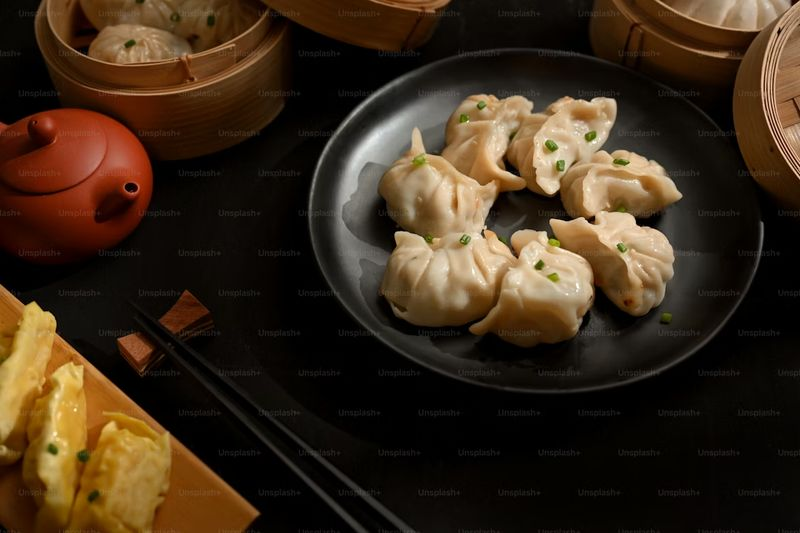

Momos
Sikkim

Momos are delicious steamed dumplings that originated in Tibet and have become a beloved street food across Sikkim and the northeastern states of India. These delicate parcels are typically filled with minced vegetables, chicken, or buff (buffalo meat), wrapped in thin dough, and steamed to perfection. Served with a spicy red chili chutney, momos offer a perfect combination of soft texture and savory flavors. The dish has gained immense popularity throughout India and is now available in various forms - steamed, fried, or even in soup.